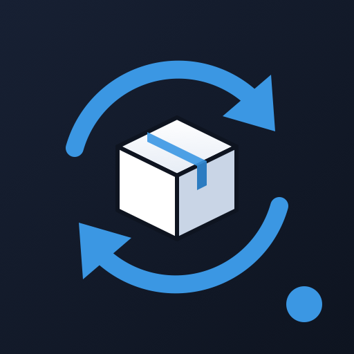

Run your warehouse from Odoo. Let ShippingBo do the rest.
Deliveries, purchase receipts, customer returns, products and stock, kept in sync between Odoo and ShippingBo, automatically and in both directions.
Your logistics provider works in ShippingBo, your team works in Odoo. This connector makes the two behave as one system: no exports, no double entry, no stock reconciliation in spreadsheets.
Deliveries leave Odoo once they are actually ready, not when the order is confirmed. Your warehouse only receives orders it can fulfil.
Shipments, receptions and returns come back as validated transfers, with real quantities, tracking numbers and backorders.
No duplicates, every exchange logged, errors shown on the document and resendable in one click, with a polling safety net behind the webhooks.
Each exchange is anchored on an Odoo transfer, so split shipments, backorders and multi-step routes just work.
ODOO → SHIPPINGBO
Ready deliveries are pushed with addresses, lines, prices, carrier and preparation date. Automatically, or with one button.
SHIPPINGBO → ODOO
Deliveries are validated with the shipped quantities, carrier and tracking number. Partial shipments create a backorder.
SHIPPINGBO → ODOO
See at a glance whether an order is transmitted, in preparation, shipped, delivered or in trouble, directly on the transfer.
BOTH WAYS
Confirmed purchase orders are announced to the warehouse. Receptions validate the receipt, and partial ones keep a backorder for the balance.
BOTH WAYS
Returns are announced from the original delivery. Received items go back to stock, and items declared not restockable are scrapped automatically.
ODOO → SHIPPINGBO
Product variants are created and updated in ShippingBo every hour: reference, EAN, name and weight.
SHIPPINGBO → ODOO
On-hand quantities are aligned with the warehouse every day, through traceable inventory adjustments.
ODOO → SHIPPINGBO
Cancel orders, receipts and returns from Odoo. Editing a purchase order updates the expected receipt in ShippingBo.
CONTROL
Choose which warehouses are run in ShippingBo. Transfers of the other warehouses are left untouched.
The picking is validated, so the delivery becomes ready.
The order is created in ShippingBo, and its ID and status appear on the delivery.
The warehouse ships, and ShippingBo notifies Odoo instantly.
The delivery is validated with quantities and tracking, and a backorder is created if needed.
Purchase receipts and customer returns follow the same pattern.
Re-sending, replaying a webhook or running a job twice never creates duplicates. Receptions are computed as received minus already received.
Real-time webhooks, backed by a polling job that re-reads open receipts and returns every 30 minutes.
Every call and webhook is logged with its payload in Settings › Technical › Logging, even when the operation fails, and purged automatically after 7 days.
A rejected send flags the document with ShippingBo's message. Fix the data, click Send to Shippingbo again, with no technical access needed.
Unknown stock is never read as zero, and lot-tracked products are never validated blindly. A failed automatic send never blocks a reservation.
Payloads and client-specific rules, such as carton splitting or pickup points, are isolated in methods you can override in your own module.
No code. Everything is configured from the Odoo settings.
In Settings › ShippingBo, enter your API credentials. Access tokens are refreshed automatically.
Switch on automatic sending of deliveries, purchase receipts and returns, independently of each other.
Tick the warehouses run in ShippingBo, and the products whose catalog and stock are synchronized.
Link your Odoo delivery methods to ShippingBo carriers in a simple table.
In ShippingBo, point the Shipment, Order, SupplyCapsule and ReturnOrder webhooks to https://your-odoo/shippingbo/webhook.
Products, stock and receptions keep themselves in sync through scheduled jobs.
Developed and maintained by Catalyt, Odoo integrators. We help you set up the connector, map your processes and extend it to your specific needs.
Contact us catalyt.fr